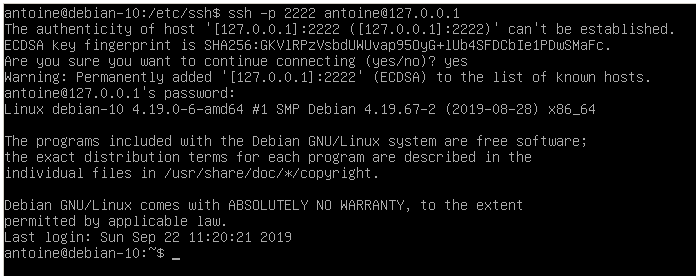

We believe security software like Kicksecure needs to remain Open Source and independent. Would you help sustain and grow the project? Learn more about our 14 year success story and maybe DONATE!
File SharingDocumentationBrowserPrevious page: File SharingIndex page: DocumentationNext page: BrowserSecure Shell (SSH)
SSH Hardening Tips; Recommended Client and Server Settings for better Security
Introduction
Secure Shell (SSH) is a core tool in a sysadmin's arsenal and provides a secure and encrypted connection and method of communication between a client user and a server. It is mainly used to remotely control a machine. In the Linux landscape, the package OpenSSH is one of the most popular and complete choices to enable communication via SSH. Newcomers to SSH should first consult the Debian SSH wiki to learn the basics.
The Secure Shell server, openssh-server, is not
installed on any version of Kicksecure by default.
Figure: Example SSH Login [1]

General Hardening Tips
Recommendation |
Description |
|---|---|
Mobile Shell Roaming and Echo |
mosh might be a useful addition. (Requires UDP.) |
SSH Breaks |
|
SSH Keys |
Key strength: To generate stronger SSH keys, see Key Generation. |
SSH Ports |
Noise reduction: Configuring SSH servers to listen on non-default ports reduces noise (automated hacking attempts) and may also increase security from less skilled attackers. |
SSH Servers |
|
Two-factor Authentication |
Availability: SSH can be combined with Two-factor Authentication (2FA), but this and its threat model is undocumented at present. |
Miscellaneous |
Further reading: For additional tips, refer to the Kicksecure forum discussion: Locking down your SSH client. |
Secure SSH Client and Server Settings
There is a client package and a server package,
openssh-client and openssh-server. Covered
topics include:
- Key generation for authentication/sign-in purposes.
- Suggested secure settings for both the client and server configurations.
- A sample set of iptables rules to allow communication between client and server.
Key Generation
Before you can connect to a server (or host) through SSH using public key authentication, a keypair is required. This consists of a public key, which you share with the server, and a private key which is used to verify that you are actually signing in. A passphrase (strongly recommended) can be added to your key which will be asked each time you sign into a server.
Once the server has your public key, it is placed into an
authorized_keys file. The private key is not shared with
anyone and should be kept in a safe place. It typically resides at
/home/user/.ssh/id_ed25519 on the client's machine with
root permissions (0600). The private key is how the server authenticates
your username.
1 Generate the SSH keypair.
Use a tool called ssh-keygen. On the command line,
type.
ssh-keygen -o -a 75 -t ed25519
-o: Produces a key that is compatible with OpenSSH instead of the older style.pem.-arefers to the number of rounds of KDF (key derivation function). This strengthens the key against a brute force attack to break the passphrase if the (private) key were to be stolen. A value of 75 to 100 is more than adequate. Remember that the more rounds that are specified, the longer it takes to authenticate (sign in). This depends on your CPU, your workload at the time of sign in, the amount of cores, and available memory among other factors.-tspecifies what type of key to generate. The choices are:rsa,ecdsaanded25519. RSA and ECDSA are older keys, and OpenSSH recommendsed25519as the best choice.
2 Store the SSH keypair.
Upon generation of your keypair, OpenSSH will ask if the keys should
be stored at: /home/user/.ssh. Reply yes.
Permissions will be automatically set in Debian. [4]
3 Done.
The keypair generation procedure is now complete. You have successfully generated a keypair.
Key Installation
Copy the key to the server you want to sign into.
Notes:
- Once: This only needs to be done once per server. The
ssh-copy-idcommand works for this task. - IP: Replace
127.0.0.1with the actual IP address of the server. - User account name: The example user name below is
root, which is the default first time login user name for many server providers. - Credentials: If this is a first time login and/or password-based login, enter the SSH login password. This password should be provided by the server provider. No password might be provided if the server provider already pre-installed an SSH key.
ssh-copy-id -i ~/.ssh/id_ed25519.pub root@127.0.0.1
The ssh-copy-id utility will check for the correct
permissions before it allows the key to be transferred.
In the following example the SSH server fingerprint is
zBAIUzWnW+Y9cS+5cND/XWw0XFIhtSnxCEIbNUcCd8c.
/usr/bin/ssh-copy-id: INFO: Source of key(s) to be installed: "/home/user/.ssh/id_ed25519.pub"
The authenticity of host '127.0.0.1 (127.0.0.1)' can't be established.
ECDSA key fingerprint is SHA256:zBAIUzWnW+Y9cS+5cND/XWw0XFIhtSnxCEIbNUcCd8c.
Are you sure you want to continue connecting (yes/no/[fingerprint])?The SSH server fingerprint should be provided by the server provider.
Key installation is now complete.
Server Login
Once the SSH public key was copied to the server, the user can log in any time.
Log in to the server.
Notes:
- IP: Replace
127.0.0.1with the actual IP address of the server. - User name: Replace user name
rootin case using a different account name.
ssh root@127.0.0.1
A password prompt for the key will be shown if a passphrase has been previously set.
If the SSH login was successful, the shell prompt will be different
from the usual Kicksecure shell prompt user@host. For
example root@server.
Figure: Example SSH Login [5]
Client and Server Configuration File Settings
The next step is to set up secure settings for the client and server
configuration files. Examples will be given for both client and server.
The relevant files are: /etc/ssh/ssh_config and
/etc/ssh/sshd_config.
Client Configuration File
View the default configuration file for informational purposes only.
featherpad /etc/ssh/ssh_config.d/30_security-misc.conf
See also:
Rationale on recommended encryption algorithms
The above client configuration sets a number of cryptography-related algorithms as preferred over others and disables several others. The rationale for these choices is described below. Algorithms are sorted by order of preference.
- Ciphers
- Description: Symmetric encryption ciphers used to secure data in real time as it is passed between the SSH client and server.
- Algorithms:
chacha20-poly1305@openssh.com: Has a higher security margin than any other algorithm provided in Debian Bookworm.[6] [7] This mode provides authenticated encryption, which prevents malleability attacks.[8]aes256-gcm@openssh.com: An AES mode that provides authenticated encryption.[9] This algorithm is ranked belowchacha20-poly1305@openssh.combecause of potential safety concerns with nonce handling and poorly designed implementations.[10] [11]aes256-ctr: Does not provide authenticated encryption and should be combined with an encrypt-then-MAC algorithm (as described in the MACs section below). [12] This encryption method is likely safe even when using a MAC algorithm that verifies integrity after decryption, due to SSH's implementation of MAC verification. [13] Still, verification after decryption is generally dangerous, so this method is ranked lower than the others.- Other algorithms are not recommended; all cipher block chaining (CBC) algorithms in OpenSSH have been disabled by default since OpenSSH 7.6. [14] Variants of AES with 128 bits of security are believed to be quantum-safe but may not be, depending on the speed at which quantum computers develop. [15] There is little reason to use 192-bit AES keys when 256-bit keys are available.
- MACs
- Description: Message Authentication Codes used to ensure the integrity of data passed between the client and server.
- Algorithms:
umac-128-etm@openssh.com: UMAC has strong, proven security guarantees. UMAC is essentially only as breakable as the cipher or hash it uses. [16] OpenSSH's UMAC implementation uses AES with 128-bit keys, [17] which is post-quantum secure in this context since the keys are only used to generate authentication codes for SSH packets. Once the SSH session ends, the keys lose all value. Even a quantum computer capable of a practical attack against 128-bit AES keys would likely not operate fast enough to pose any threat here.hmac-sha2-512-etm@openssh.com: HMAC's security is uncertain. There are no public known attacks yet, but it could happen.[18] Therefore, this is not as good as UMAC but still decent. This is the "least bad" choice after UMAC.hmac-sha2-256-etm@openssh.com: Same as the previous algorithm but with a shorter tag length.- Other algorithms are not recommended; MAC tag lengths shorter than
128 bits are sometimes considered insecure. [19] SHA1-
and md5-based algorithms are potentially insecure due to known
vulnerabilities in their hash functions. SHA2 without HMAC is
potentially dangerous due to length extension attacks.
[20] Generating the MAC first, then encrypting, is
generally a bad idea, as mentioned in the
aes256-ctrrationale above.
- KexAlgorithms
- Description: Encryption algorithms used for exchanging the symmetric encryption keys that will secure the connection.
- Algorithms:
sntrup761x25519-sha512: Believed to be at least equivalent in security to Curve25519, which is the best non-quantum-secure algorithm provided. [21] This algorithm combines Curve25519 with NTRU Prime, which is currently believed to be post-quantum secure. [22]mlkem768x25519-sha256: Proven to be at least equivalent to Curve25519 in security.[23] Ranked below NTRU Prime because it is possible, or even likely, that ML-KEM is intentionally weakened. Cryptographer Daniel J. Bernstein has raised serious concerns about ML-KEM (a.k.a. Kyber) and the trustworthiness of NIST in standardizing it. [24] [25] It is therefore recommended to assume ML-KEM is not post-quantum secure and offers no additional protection over Curve25519.- Note: In the recommended configuration above,
mlkem768x25519-sha256is not included because it is not supported in Debian 12 and, thus, not supported in Kicksecure 17. It will be added when Debian 13 is released and Kicksecure is ported to it.
- Note: In the recommended configuration above,
curve25519-sha256: Not post-quantum-secure. Widely used and believed to be secure against classical computers.- Other algorithms are not recommended; nistp-based algorithms are likely intentionally broken [26] and are difficult to implement correctly. [27] Diffie-Hellman algorithms are rarely used, computationally expensive, and offer no security advantages over Curve25519. [28]
- HostKeyAlgorithms
- Description: Signature algorithms used for verifying the SSH server's identity.
- Algorithms:
sk-ssh-ed25519@openssh.com: Closely related to Curve25519. [29] Theskvariant is designed specifically for use with FIDO/U2F tokens, which may be useful in some setups. [30]ssh-ed25519: Same as above, but a standalone key with no hardware token involved.- Both
sk-ssh-ed25519@openssh.comandssh-ed25519have corresponding certificate authority based modes that may be useful in some scenarios, namelysk-ssh-ed25519-cert-v01@openssh.comandssh-ed25519-cert-v01@openssh.com. [31] These modes are not enabled by default, but should be safe to enable if you need them. - Other algorithms are not recommended; nistp-based algorithms are likely intentionally broken. RSA can be dangerous due to difficulties in correct implementation. [32] DSS is intentionally disabled by OpenSSH by default. [33]
- There appear to be no post-quantum-secure signature algorithms supported by OpenSSH at this time. In a post-quantum world, anyone with a sufficiently powerful quantum computer could forge a host key and perform a MITM attack on the SSH connection. [34] There is currently no way to address this with OpenSSH client configuration. Some experiments have been done with adding post-quantum-secure signatures to OpenSSH. [35]
- PubkeyAcceptedAlgorithms
- Description: Signature algorithms used for the client to authenticate itself to the server.
- Algorithms: Identical to those available for HostKeyAlgorithms; thus, the advice given for HostKeyAlgorithms applies here as well.
Server Configuration File
See also sshd
configuration file man page.
 Warnings:
Warnings:
- Risk: Changing the
sshdconfiguration can prevent future successful SSH connections to your servers. - Suggested approach: It is probably best to only set this up for new servers or if you do not mind re-installing the server should you lock yourself out.
- Lower-risk option: If a server console interface (ability to run repair commands from the server host web administrator interface) is available, it is far less risky to make major changes to the SSH configuration.
- Backup: Do not proceed without a backup of the server and knowledge of how to restore the server should anything go wrong.
Prerequisite knowledge:
- Terminal: How to open a terminal (emulator) such as qterminal.
- Multiple sessions: How to open two terminal emulators or multiple terminal emulator tabs at the same time.
- Text editing: Using command-line text editors such as
nano.
Instructions:
1 Open at least two SSH connections to the server in two different terminal tabs.
One is used as a backup should the SSH connection be accidentally closed in the middle of the setup.
2 View the fingerprint of the server's ed25519 public key.
Fine hosting providers will also show the server fingerprint in the server web interface.
ssh-keygen -lf /etc/ssh/ssh_host_ed25519_key.pub
Example output:
256 SHA256:1Ri62BbzONwKbRau92UcyA1K4vu+mctfeddDTUu04ao root@nc-ph-1401-50 (ED25519)3
Restart the sshd daemon.
sudo systemctl restart sshd
Existing SSH connections should not be interrupted by Debian default.
4 Open a new terminal tab and see if you can still SSH to the server.
If yes, proceed.
5 Notes.
Note: When using the configuration file below, the following warning might appear. The IP address and SHA256 hash will be different.
@@@@@@@@@@@@@@@@@@@@@@@@@@@@@@@@@@@@@@@@@@@@@@@@@@@@@@@@@@@
@ WARNING: REMOTE HOST IDENTIFICATION HAS CHANGED! @
@@@@@@@@@@@@@@@@@@@@@@@@@@@@@@@@@@@@@@@@@@@@@@@@@@@@@@@@@@@
IT IS POSSIBLE THAT SOMEONE IS DOING SOMETHING NASTY!
Someone could be eavesdropping on you right now (man-in-the-middle attack)!
It is also possible that a host key has just been changed.
The fingerprint for the ED25519 key sent by the remote host is
SHA256:e3b0c44298fc1c149afbf4c8996fb92427ae41e4649.
Please contact your system administrator.
Add correct host key in /home/user/.ssh/known_hosts to get rid of this message.
Offending ECDSA key in /home/user/.ssh/known_hosts:35
remove with:
ssh-keygen -f "/home/user/.ssh/known_hosts" -R "xxx.xxx.xxx.xxx"
ED25519 host key for xxx.xxx.xxx.xxx has changed and you have requested strict checking.
Host key verification failed.It will look similar to the following.
256 SHA256:e3b0c44298fc1c149afbf4c8996fb92427ae41e4649 root@node (ED25519)6 Notice.
 Warning:
Warning:
The following configuration file no longer allows root or any other user to log in with a password. Make sure that you can do maintenance tasks physically, via another user, or configure a privileged user to have another authentication method such as public key before finishing this setup.
7 View the default configuration file for informational purposes only.
- featherpad /etc/ssh/sshd_config.d/30_security-misc.conf

github-link-widget-no-url-given
8
Create the SSH group and add your SSH user (in this example, the user
user) to the SSH group.
sudo groupadd -f ssh sudo usermod -aG ssh user
If you want to allow root login, also add
root to the ssh group and copy the client's public
key to root's authorized key file.
9
Open file /etc/ssh/sshd_config.d/50_user.conf in an editor
with administrative ("root") rights.
1 Select your platform.
2 Notes.
- Sudoedit guidance: See Open File
with Root Rights for details on why using
sudoeditimproves security and how to use it. - Editor requirement: Close Featherpad (or the chosen text
editor) before running the
sudoeditcommand.
3 Open the file with root rights.
sudoedit /etc/ssh/sshd_config.d/50_user.conf
2 Notes.
- Sudoedit guidance: See Open File
with Root Rights for details on why using
sudoeditimproves security and how to use it. - Editor requirement: Close Featherpad (or the chosen text
editor) before running the
sudoeditcommand. - Template requirement: When using Kicksecure-Qubes, this must be done inside the Template.
3 Open the file with root rights.
sudoedit /etc/ssh/sshd_config.d/50_user.conf
4 Notes.
- Shut down Template: After applying this change, shut down the Template.
- Restart App Qubes: All App Qubes based on the Template need to be restarted if they were already running.
- Qubes persistence: See also Qubes Persistence
- General procedure: This is a general procedure required for Qubes and is unspecific to Kicksecure-Qubes.
2 Notes.
- Example only: This is just an example. Other tools could achieve the same goal.
- Troubleshooting and alternatives: If this example does not work for you, or if you are not using Kicksecure, please refer to Open File with Root Rights.
3 Open the file with root rights.
sudoedit /etc/ssh/sshd_config.d/50_user.conf
 Warning:
Warning:
The following configuration file no longer allows non-members of the
ssh group to log in. Make sure that at least one user in
the ssh group has rights to edit this configuration and
restart the systemd service in case of any failure.
10 The file will be empty. Paste the following content:
## Only members of this group are allowed to attempt login. AllowGroups ssh
11
Restart the sshd daemon. All existing SSH connections will
remain open.
sudo systemctl restart sshd
Keep the SSH connection open.
12 Open another terminal tab and try to SSH to the server.
- Success: If it works, the process is complete.
- Troubleshooting: If it does not work, use your still open terminal to check for configuration errors before trying again.
Notes
These are the completed SSH configuration files. Please note that the
entries preceded by a # are not necessary for functional
use; they are included only as examples of what is possible in SSH. If
you do not have a specific use for any of the commented-out options in
either configuration file, do not use them at all.
The Ciphers, MACs, and Kex algorithms are all the strongest available
at the time of writing with OpenSSH 9.2p1 on Debian Bookworm. The
entries in the configuration files above are the most important and will
establish a functional and well-guarded setup. Use ed25519 keys only.
RSA and ECDSA are outdated. Use the ssh-keygen command to
generate the keys.
The VisualHostKey yes entry in the
/etc/ssh/ssh_config.d/30_security-misc.conf file ensures
that when you log in, OpenSSH shows you an ASCII-generated picture of
what the key looks like. In addition to all other verifications, this is
one last line of defense to alert you to a changed or incorrect key.
Generally, newer OpenSSH versions will choose the strongest cipher on
their own when negotiating a connection, but the configuration files
establish the order in which they are parsed. Both sides need to have
the same or compatible OpenSSH versions and Ciphers,
MACs, KexAlgorithms,
HostKeyAlgorithms, and
PubkeyAcceptedAlgorithms options.
Firewall Settings and Rules
 Warning: This is for testers-only!
Warning: This is for testers-only!
It is necessary to make specific firewall rules for your intended SSH
activity. For example, if you wanted to connect to a server at
123.45.678.910 and both your configuration and the server's
configuration specify port 4675 to communicate over:
sudo iptables -A OUTPUT -p tcp -o [interface-name] -s [your client ssh ip] -d [ssh server ip] --dport 4675 --j ACCEPT
Then to let them respond:
sudo iptables -A INPUT -p tcp -i [interface-name] -s [ssh server ip] -d [your client ip] --dport 4675 --j ACCEPT
This assumes a default-deny policy for INPUT and OUTPUT. If you have a default-allow for OUTPUT, then the following rule must be added as the last one in the OUTPUT chain:
sudo iptables -A OUTPUT --j DROP
This ensures the outgoing rules you have are the only ones that allow traffic. Iptables parses in order, so when it does not see a rule matching a packet not on your list, it checks each one in the chain until it finds a match with the last rule and drops the packet. Also, SSH only uses the TCP protocol, so no UDP rules are explicitly needed.
This should complete the SSH setup. Some people also recommend
re-generating the moduli file that comes in /etc/ssh. If
you use the settings above, look at the kex algorithms. Since no
Diffie-Hellman group exchange kex algorithms are used to exchange keys,
it is unnecessary to regenerate the moduli. The chosen kex algo is
curve25519.
SSH Login Comparison Table
Note: /etc/shadow password symbol
evaluation is done left to right. If a password is locked or disabled
and a plain-text or encrypted password is set, the password can't be
used for password-based logins. Please consult the User page for more information.
Disclaimer: This information is provided as-is without any guarantees or warranties of any kind, including but not limited to correctness, completeness, or fitness for a particular purpose. Users are responsible for testing and verifying their specific configurations to ensure security and functionality. Our Terms of Service apply.
Quote from the manual sshd_config.5: Note that each authentication method listed should also be explicitly enabled in the configuration.
|
Option required for authentication method to be used |
Explanation |
|---|---|---|
|
|
Allows login to an account with an empty password string. |
|
|
Allows password authentication. |
|
|
Allows public key authentication. |
|
|
Allows client domain name (hostname) authentication. |
|
|
Allows Generic Security Service Application Programming Interface authentication. |
|
|
Allows keyboard-interactive authentication. |
Note: The following table is very complex. There is a huge amount of ways to configure SSH logins. The user should verify their particular setup.
Password State |
|
|
Login Outcome |
Explanation |
|---|---|---|---|---|
Password set |
|
Irrelevant |
Yes |
SSHD or PAM checks the shadow file and an unlocked password allows any type of login. |
Empty |
|
Irrelevant |
Yes |
SSHD or PAM checks the shadow file and an empty password allows
|
Disabled |
|
Irrelevant |
No |
SSHD or PAM checks the shadow file and a disabled password prohibits password-based login. |
Disabled |
Except with |
Irrelevant |
Yes |
SSHD or PAM checks the shadow file and ignores disabled password as it is non password-based login. |
Locked |
|
Yes |
No |
PAM checks the shadow file and locked password prohibits password-based login. |
Locked |
Except with |
Yes |
Yes |
PAM checks the shadow file and ignores locked password as it is non password-based login. |
Locked |
|
No |
No |
SSHD checks the shadow file and a locked password prohibits any type of login. [36] |
Forum Discussions
See Also
Footnotes
- https://devconnected.com/how-to-install-and-enable-ssh-server-on-debian-10/
- https://security.stackexchange.com/questions/112802/why-openssh-deprecated-dsa-keys
- https://stribika.github.io/2015/01/04/secure-secure-shell.html
- There have been reports of wrong permissions on certain other
distributions. For reference, the correct permissions are as follows: *
Public key:
0644* Private key:0600(root) Having overly permissive permissions will prevent logins and cause unwanted errors. - https://devconnected.com/how-to-install-and-enable-ssh-server-on-debian-10/
- https://crypto.stackexchange.com/a/101056
- https://eprint.iacr.org/2019/1492.pdf
- https://andrea.corbellini.name/2023/03/09/authenticated-encryption/
- https://crypto.stackexchange.com/questions/103242/why-gcm-is-used-more-often-than-ctr
- https://crypto.stackexchange.com/questions/42982/safety-of-random-nonce-with-aes-gcm
- https://eprint.iacr.org/2016/475.pdf
- https://manpages.debian.org/bookworm/openssh-client/ssh_config.5.en.html#MACs
- https://crypto.stackexchange.com/a/44028
- https://www.openssh.com/txt/release-7.6
- https://crypto.stackexchange.com/a/102672/133564
- https://datatracker.ietf.org/doc/html/rfc4418#section-6.1
- https://github.com/openssh/openssh-portable/blob/eddd1d2daa64a6ab1a915ca88436fa41aede44d4/umac.c#L104
- https://crypto.stackexchange.com/a/67350/133564
- https://www.virtuesecurity.com/kb/ssh-weak-mac-algorithms-enabled/
- https://crypto.stackexchange.com/a/50881/133564, search answer for "length extension"
- https://www.ietf.org/archive/id/draft-josefsson-ntruprime-ssh-02.html
- https://eprint.iacr.org/2016/461
- https://www.ietf.org/archive/id/draft-ietf-sshm-mlkem-hybrid-kex-02.html#name-security-considerations
- https://blog.cr.yp.to/20231003-countcorrectly.html
- https://blog.cr.yp.to/20231125-kyber.html
- https://credelius.com/credelius/?p=97
- https://cr.yp.to/talks/2013.05.31/slides-dan+tanja-20130531-4x3.pdf
- https://www.openssh.com/txt/release-10.0
- https://crypto.stackexchange.com/a/43058/133564
- https://www.openssh.com/txt/release-8.2
- https://superuser.com/a/1225476/1734781
- https://blog.trailofbits.com/2019/07/08/fuck-rsa/
- https://www.openssh.com/legacy.html, search for "dsa"
- https://crypto.stackexchange.com/a/56197/133564
- https://lists.mindrot.org/pipermail/openssh-unix-dev/2025-July/041979.html
- sshd journal log:
sshd[7740]: User user not allowed because account is locked
Categories: Documentation